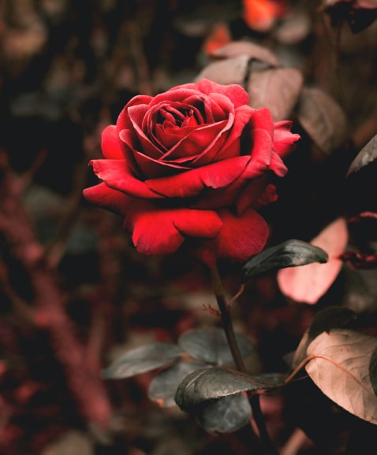

Rosa
Cultivar rosas em ambientes fechados é uma maneira divertida de apreciar esta planta popular o ano todo, independentemente do clima lá fora. Os entusiastas da rosa, conhecidos como rosários, estão encontrando novas maneiras de trazer suas flores coloridas favoritas para dentro de casa.
O inverno é o momento perfeito para começar o seu jardim de rosas interno, porque as plantas estão adormecidas e as plantas de raiz nua estão disponíveis em todos os lugares.